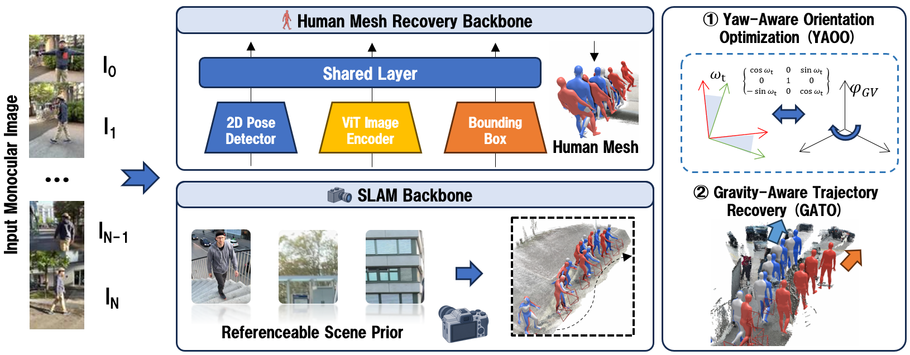

Abstract
Recovering human motion in world coordinates from a moving-camera video requires accurate estimates of both body motion and camera motion. Errors in either estimate accumulate in the reconstructed trajectory. GravHMR is a training-free refinement that combines camera poses from SLAM with predictions from an off-the-shelf HMR model. It aligns body orientation in a shared gravity frame and refines the root trajectory in the SLAM world.
On EMDB-2, GravHMR reaches 154.0 mm W-MPJPE100 with ViPE. With the same masked DROID-SLAM camera estimates and ground-truth intrinsics as TRAM, it reaches 189.8 mm, against 222.4 mm for TRAM. With the same HMR backbone, it reduces the error of GVHMR (276.5 mm) by 44.3%.
SLAM supplies the trajectory
SLAM camera rotations place camera-frame body estimates in a common world frame. The root is lifted along each 2D keypoint ray with the HMR depth. A short optimization keeps the root consistent with reprojection and the HMR's own body velocity.
One vertical for camera and body
We express SLAM and HMR around a shared gravity axis: heading is resolved about that axis, and an image-based gravity estimate stands the SLAM world upright, independent of the HMR backbone.
Method
An HMR backbone gives the body in the camera frame; a SLAM backbone gives the camera in the world. GravHMR aligns body orientation about gravity, then recovers the root trajectory in the SLAM world.

In-the-wild videos
In-the-wild videos with camera poses estimated by ViPE. No ground-truth trajectories are available. The floor grid is 1 m and follows the ground height under the subject.
Without and with GravHMR on EMDB
GVHMR with PVA-Net keypoints, before and after GravHMR refinement, compared with ground truth. Predictions are aligned once using the first 100 frames; subsequent drift remains visible.
Main results
Global human motion on EMDB-2 and RICH. WA-MPJPE100, W-MPJPE100 and FS in mm, RTE in %, Jitter in 10 m/s³. Lower is better. Bold is best and underlined is second best per column.
| EMDB-2 | RICH | |||||||||
|---|---|---|---|---|---|---|---|---|---|---|
| Method | WA-MPJPE | W-MPJPE | RTE | Jitter | FS | WA-MPJPE | W-MPJPE | RTE | Jitter | FS |
Ours w/ ViPE uses estimated camera poses and intrinsics. On EMDB-2, ours w/ masked DROID uses the same camera estimates and ground-truth intrinsics as TRAM.
Citation
The paper is under review; the entry below will be updated with the final venue and authors.
@article{gravhmr2026,
title = {GravHMR: Coupling SLAM and Human Mesh Recovery
in a Shared Gravity Frame},
author = {Anonymous},
journal = {Under review},
year = {2026}
}